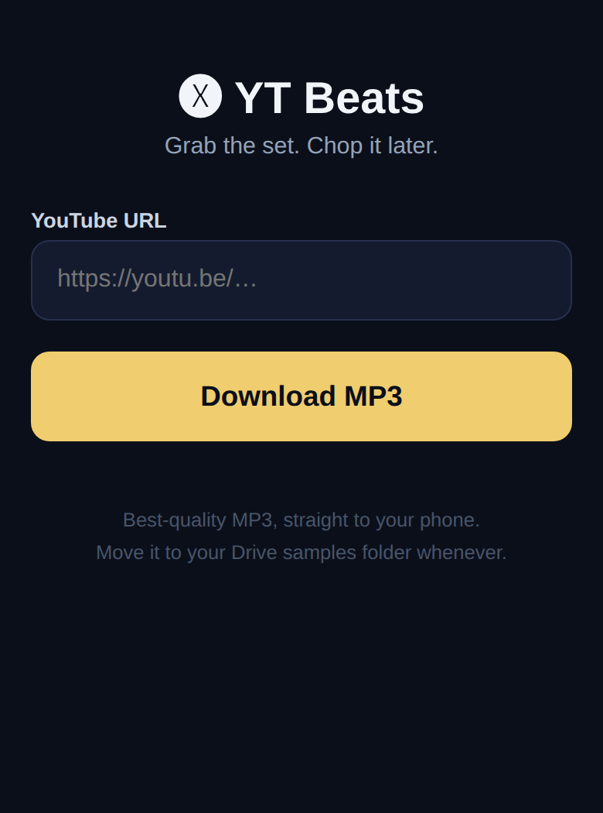

Grab YouTube audio as best-quality MP3 for sampling. Hear a DJ play a rare cut, save the whole set, chop it later. Desktop GUI plus a phone-friendly web version that runs on your home server.

The phone web app — paste a link, MP3 downloads straight to your phone
What it does
Paste a YouTube URL → best-quality MP3, straight to your phone
Built for grabbing full DJ sets on the go — listen through, find the sweet spots, chop later
Your proven yt-dlp settings under the hood (Chrome cookies, best audio)